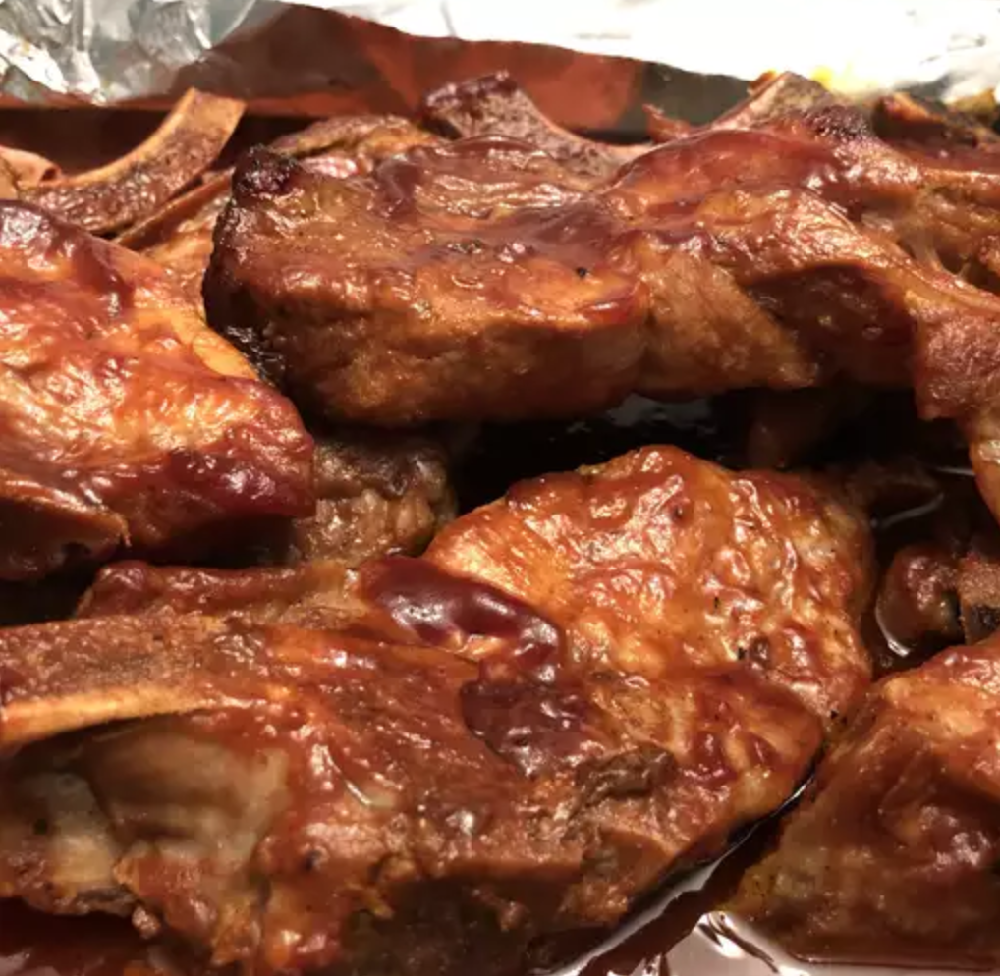

BBQ Ribs

This BBQ ribs recipe may be different than others you've tried, but for super tender ribs, give it a try! Lean, country-style pork ribs are boiled in seasoned water until tender, then finished up in the oven under a blanket of your favorite barbecue sauce as they bake to perfection. That's it! Back to simplicity, back to country life.
Ingredients
- Ribs
- Spices
- BBQ Sauce
- Water
Steps
- Boil the Ribs: Bring ribs, spices, and water to a boil and cook until ribs are tender.
- Coat the Ribs With Barbecue Sauce: Place the boiled ribs in a baking dish and cover with your favorite barbecue sauce (either store-bought or homemmade)
- Bake: Bake the ribs, covered, until the internal temprature reaches 160 degrees F.